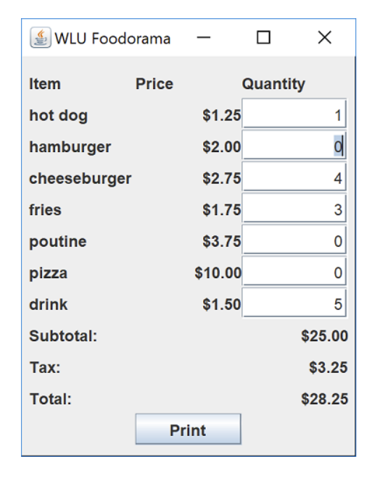
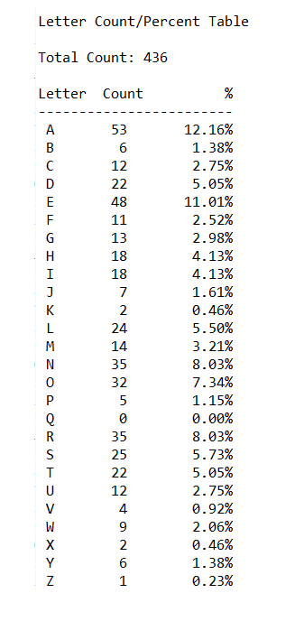

Projects
GUI Interface in Java
Creating a GUI of a menu to take food
orders at a restaurant using the libraries
Hashmap, NumberFormat, JFrame
BSTs in Python
Coding a linked BST in python
to sort text from a .txt file
Creating a GUI of a menu to take food
orders at a restaurant using the libraries
Hashmap, NumberFormat, JFrame
Coding a linked BST in python
to sort text from a .txt file